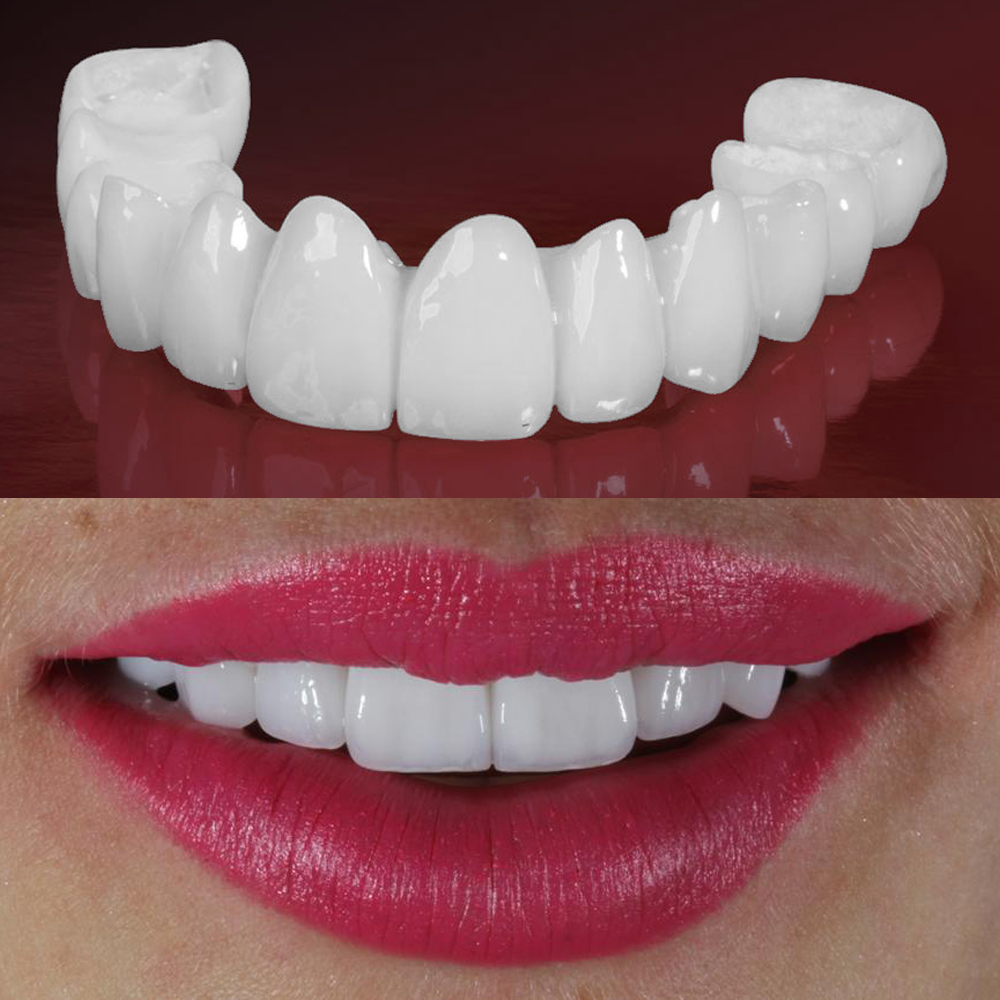

Todos nós sonhamos com um sorriso branco e radiante que nos faça sentir confiantes e bonitos. Infelizmente, porém, nem toda a gente pode pagar procedimentos dentários que requerem tempo e, na maioria dos casos, muito dinheiro.

É por isso que o Dr. Duarte Pereira da Silva o chamado "dentista VIP", deu uma entrevista exclusiva especialmente para nós para falar sobre as novas e altamente eficazes facetas removíveis «SwissDent», um produto que está a mudar a forma como as pessoas olham para o mundo. Vamos descobrir o que são e porque é que toda a gente as deve comprar agora para obter o tão cobiçado "sorriso de Hollywood"!

Antes de mais, obrigado por me dar a oportunidade de falar sobre este produto e de nos falar um pouco sobre mim.
Licenciei-me em medicina dentária e prótese dentária na Universidade de Lisboa. Nunca parei de estudar e completei cursos avançados em periodontia na Universidade da Califórnia em Los Angeles, estudos de pós-graduação em implantologia no Hospital Lusíadas em Lisboa e um segundo mestrado na utilização de lasers em medicina dentária na Universidade do Porto. Tive de aprender constantemente para me manter a par das constantes inovações no domínio dos implantes e das próteses.
Criei então o meu próprio consultório, White Identity, onde me concentro em tornar cada procedimento individual, preservando e realçando a singularidade de cada sorriso, mostrando respeito pelo rosto da pessoa que o usa.
Trabalhei com muitas celebridades durante a minha carreira, razão pela qual as pessoas se referem frequentemente a mim como um "dentista VIP".

Por muito que gostasse de dizer que a única forma de ter um sorriso bonito é visitar o meu consultório, sei que nem toda a gente pode pagar uma dentisteria corretiva, pois nem todos os bolsos são iguais.
O mesmo acontece com as próteses dentárias, que muitas vezes atingem valores exorbitantes e podem ser bastante incómodas.

Felizmente, hoje temos a oportunidade de ter o sorriso perfeito sem recorrer a estes procedimentos dispendiosos e, em alguns casos, dolorosos. De facto, em 2021, foi criada nos EUA uma gama exclusiva de facetas removíveis: a SwissDent, perfeitamente adaptada a todos os tipos de dentes.

Estas facetas são recomendadas para qualquer pessoa que deseje um sorriso mais atraente, graças ao procedimento indolor que pode tornar os seus dentes novamente brancos e aumentar a autoestima.
Mas não é só isso, as facetas removíveis «SwissDent» também são úteis para uma variedade de problemas. Estes incluem:
Uma vez colocadas, estas facetas têm a capacidade especial de aderir à superfície dos dentes. Desta forma, podem fazer uma impressão personalizada. Com as facetas removíveis SwissDent, as pessoas não sentem qualquer desconforto ou incómodo e esquecem-se que as estão a usar após os primeiros 10 minutos.

As facetas amovíveis «SwissDent» são feitas de um material polimérico de alta qualidade com uma elasticidade muito elevada. Isto significa que o material resiliente é universalmente dimensionado e adapta-se a todos os tipos de maxilares, garantindo um ajuste seguro para todos os tipos de dentes.
Para além da elasticidade, o dispositivo também se caracteriza por uma força muito elevada e resistência às manchas. Por conseguinte, comer em excesso, beber vinho tinto, chá preto, café ou fumar não danificará os rebordos.
Em primeiro lugar, como já referimos, estas facetas são muito mais baratas do que as tradicionais intervenções dentárias dolorosas. A sua qualidade é muito elevada, mas o preço é mais do que razoável.

Tanto os homens como as mulheres podem usar facetas e estas são adequadas para qualquer tipo de boca devido ao material extremamente flexível e durável. Podem ser colocadas em casa de forma fácil, rápida e segura, sem necessidade de ranger os dentes antes da colocação e completamente autónomas.
As facetas removíveis «SwissDent» podem ser usadas 24 horas por dia, 7 dias por semana, sem qualquer desconforto ou incómodo.
O melhor destas facetas é que pode comer e beber enquanto as usa sem as horríveis manchas escuras causadas pelas substâncias corantes das bebidas e dos alimentos. Além disso, quem não resiste pode até fumar sem se preocupar com os ingredientes activos do fumo, uma vez que estas facetas removíveis não mudam de cor.

Certifique-se de que compra apenas facetas removíveis genuínas através do formulário de encomenda original. O mercado está cheio de falsificações e cópias de baixa qualidade. Se vir um produto que se pareça com a «SwissDent» por um preço muito baixo, não confie nele: são burlões que tentam vender-lhe produtos falsos que podem até piorar os seus problemas dentários.
Muito obrigado, e espero que todos possam melhorar o seu sorriso com estas fantásticas facetas amovíveis SwissDent!
Deixo um formulário de encomenda oficial no final deste artigo, para que possa adquirir em segurança um produto 100% original que o ajudará a ter um sorriso brilhante e a sentir-se novamente confiante.

De que é que está à espera? Encomende já as suas facetas removíveis SwissDent para ter dentes perfeitamente brancos!

Adicionar comentário
Roberto Oliveira
Quem encomendou estes folheados, o que acha da qualidade, são bons ou uma falsa chinesa?
Gosto 13 Comentários 12 minutos atrás
Irene Guimarães
Roberto, encomendei-as aqui através do formulário de encomenda oficial. São originais, não são falsas. Tenho um grande espaço entre os dentes superiores da frente, não gostava nada dos meus dentes. Fui a um dentista e disseram-me que só um sistema de aparelhos pode corrigir isto, mas para o resto da minha vida vou ter de dormir com um protetor bucal e é doloroso. SwissDent tem sido um verdadeiro salva-vidas para mim! É fácil de instalar e mantém-se no sítio.
Gosto 6 Comentários 13 minutos atrás
Fernando Pereira
Também estou a usá-los há 3 meses. Não há desconforto, a fala não se alterou, habituei-me a elas em cerca de 10 minutos após a colocação. Durante a utilização, não escureceram. E o seu preço é uma grande vantagem.
Gosto 19 Comentários 25 minutos atrás
Luiza Pinto
Receio que não tenham um aspeto natural. Pode partilhar uma fotografia com eles?
Gosto Comentários 46 minutos atrás
Ana Maria Gil
Aqui está. Estou a usá-las há um mês e meio. Quando os instalei e vim trabalhar, toda a gente pensou que eu tinha branqueado os meus dentes dessa forma (tenho um esmalte muito amarelo por natureza) e pediu o número do meu dentista)))
Gosto 43 Comentários 1 hora atrás
Alexandro Mendes
Trabalho como agente imobiliário e o meu sorriso é o meu ganha-pão. Se não tivermos um sorriso bonito, não conseguimos atrair um cliente. E a minha boca era horrível, os meus dentes não estavam direitos e a minha cor não era a correta. Como sabem os preços de um dentista, eu não podia pagar. SwissDent foi uma verdadeira dádiva de Deus. O preço é baixo e o resultado é como o de um dentista melhor. Depois de comprar as facetas, o meu rendimento quase duplicou. Acho que o resultado é ótimo!
Gosto 3 Comentários 1 hora atrás
Maria Duarte
Eu também trabalho com pessoas. Procuro ir ao dentista regularmente, faço clareamento e limpeza. E recentemente reparei que os meus dentes ficaram sensíveis, o meu médico disse-me que não devia branquear mais e recomendou-me a SwissDent como alternativa. Hesitei, pensei que seria muito desconfortável e que a dicção iria mudar. Mesmo assim, decidi experimentar, uma vez que o preço é ainda mais baixo do que o de uma limpeza normal. Todos os meus receios revelaram-se infundados. São muito finas, pelo que nem se sentem, mas são muito duradouras, a minha dicção não se altera, não escurecem com o tempo, nem mesmo com café ou cigarros. Ajustam-se perfeitamente, pelo que pode usá-las durante todo o dia e comer com elas. Os materiais são de alta qualidade. São fáceis de cuidar. Por isso, estou muito satisfeita com a minha compra.
Gosto Comentários 2 hora atrás
Elena de Fonseca
Os meus dentes sempre foram bons, mas sempre pode melhorar. Com estas facetas, o meu sorriso ficou como o de uma estrela de Hollywood!
Gosto 12 Comentários 2 hora atrás
Victória Benavides da Silva
Já ouvi falar de facetas como alternativa às de cerâmica, mas não consigo decidir qual delas encomendar. Tenho medo do tamanho errado... Não consigo decidir quais encomendar... Partilhem as minhas experiências, por favor...
Gosto 53 Comentários 2 hora atrás
Glória Ferreira
Victoria, SwissDent tem um tamanho universal, por isso serve a toda a gente. Sei-o pela experiência da minha própria família. Os meus dentes são pequenos e não são direitos, e o meu marido, tem dentes maiores, e estes adaptam-se perfeitamente a mim e a ele.
Gosto 16 Comentários 2 hora atrás
Victória Benavides da Silva
Glória, é possível nivelar os dentes se os usarmos durante muito tempo?
Gosto 2 Comentários 2 hora atrás
Glória Ferreira
Victória, não é certamente um sistema de aparelhos, mas os meus dentes ficaram mais nivelados.
Gosto 11 Comentários 2 hora atrás
Natália Costa
Há muito que estudo a melhor forma de arranjar o meu sorriso. O que se passa é que tenho dentes estragados e muitas obturações, não importa a cor que se apanhe, mesmo assim nota-se muito. Por isso, cheguei à conclusão de que a SwissDent é a melhor solução. Antes de mais, é o preço. Se tiver facetas de cerâmica ou uma ponte, é muito caro. Em segundo lugar, não tenho de serrar os meus dentes. Em terceiro lugar, o SwissDent é muito cómodo e tem um aspeto natural. No geral, por um preço mínimo, fiquei com um sorriso deslumbrante. Quem hesitar em duvidar se deve ou não o encomendar, eu recomendo-o sem dúvida!
Gosto 33 Comentários 2 hora atrás
Maria Castro
Também encomendei facetas. A entrega foi muito rápida, demorou apenas 2 dias. Colocam-se em 2 minutos, mantêm-se firmes, não caem, têm um aspeto muito natural. Infelizmente, encomendei-as quando não havia desconto, mas mesmo ao preço total, continua a ser muito barato. Estou muito satisfeita com a encomenda.
Gosto 23 Comentários 3 hora atrás
Gustavo Almeida
Podem dizer-me se me faltam alguns dentes, se me vão servir? Não me vão cair?
Gosto 6 Comentários 3 hora atrás
Joaquim Sousa
Gustavo, o meu pai está a usá-las há seis meses, pois faltam-lhe seis dentes. Ele diz que se adaptam na perfeição, não causam desconforto na boca e são firmes.
Gosto 6 Comentários 3 hora atrás
Gustavo Almeida
Joaquim, obrigado pela resposta. Vou encomendar algumas para mim, especialmente com um desconto tão grande agora.
Gosto 6 Comentários 3 hora atrás
Daniel Coimbra
Desde a infância que todos os meus dentes estão manchados, ou seja, fluorose, quem a conhece sabe o tipo de dor que é. O problema é a água da cidade onde passei a minha infância - há uma grande quantidade de flúor. O meu médico dissuadiu-me de fazer o branqueamento, disse que a diferença de cor seria visível, e então pensei em facetas de cerâmica, mas depois de ouvir o preço percebi que teria de ficar a crédito (comecei a procurar uma alternativa, e encontrei a SwissDent, depois de ler as críticas, encomendei através do formulário oficial de encomenda, para evitar cair numa contrafação chinesa. Agora não consigo parar de sorrir a toda a hora!
Gosto 6 Comentários 3 hora atrás
Miguel Sampaio
Encomendei aqui umas facetas ótimas! Têm o aspeto ideal! Muito boas, mudaram o meu sorriso! Tenho um sorriso tão bonito com estas facetas! É perfeito!
Gosto 6 Comentários 3 hora atrás
Natália Marques
Os meus dentes sempre foram muito finos, translúcidos, tortos, os caninos salientes, sabe, para uma rapariga isso é crítico. Também tenho medo de dentistas. Mas, ao que parece, há uma ótima maneira de conseguir um sorriso de Hollywood sem ir ao dentista - as facetas removíveis SwissDent. No início, tinha medo de morder alguma coisa, pois pensava que ia sair a voar. Não, claro, são rápidas e têm um aspeto perfeito. Agora tenho vontade de sorrir!!! Não como antes, com os lábios cerrados!
Gosto 6 Comentários 3 hora atrás